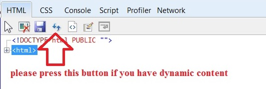

test dynamic content
dynamic content are generated by JS code
IE can't "select element by click" on dynamic content until you press F5 in developer tool(not IE F5)

input:
select:
Afghanistan
Åland Islands
insert content
the following is dynamically generated by JS: